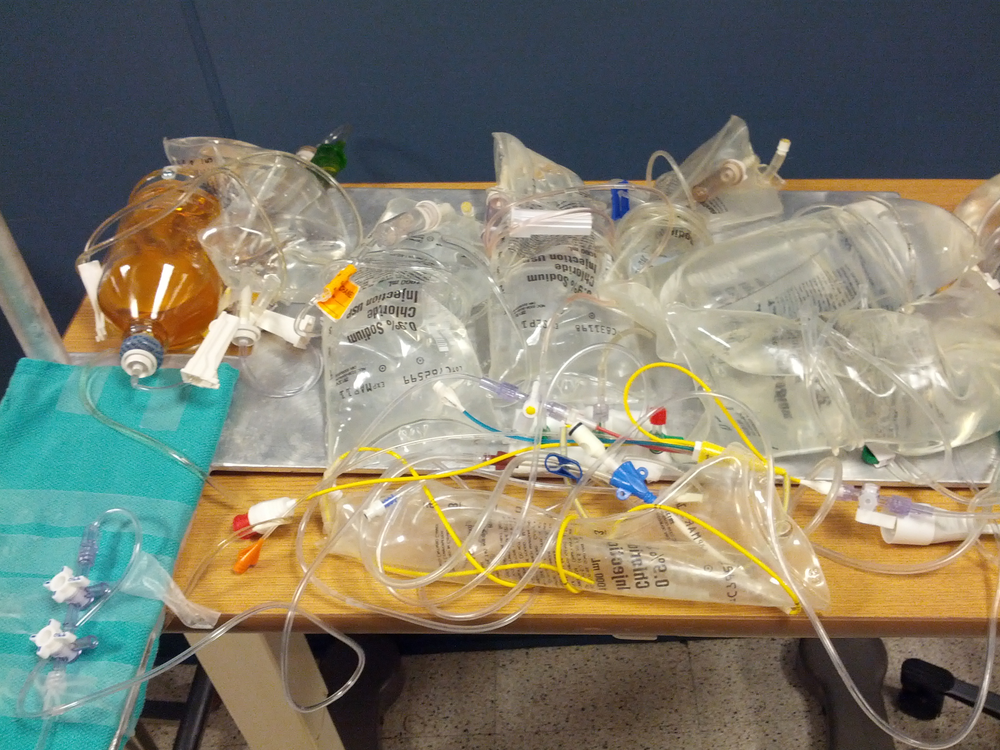
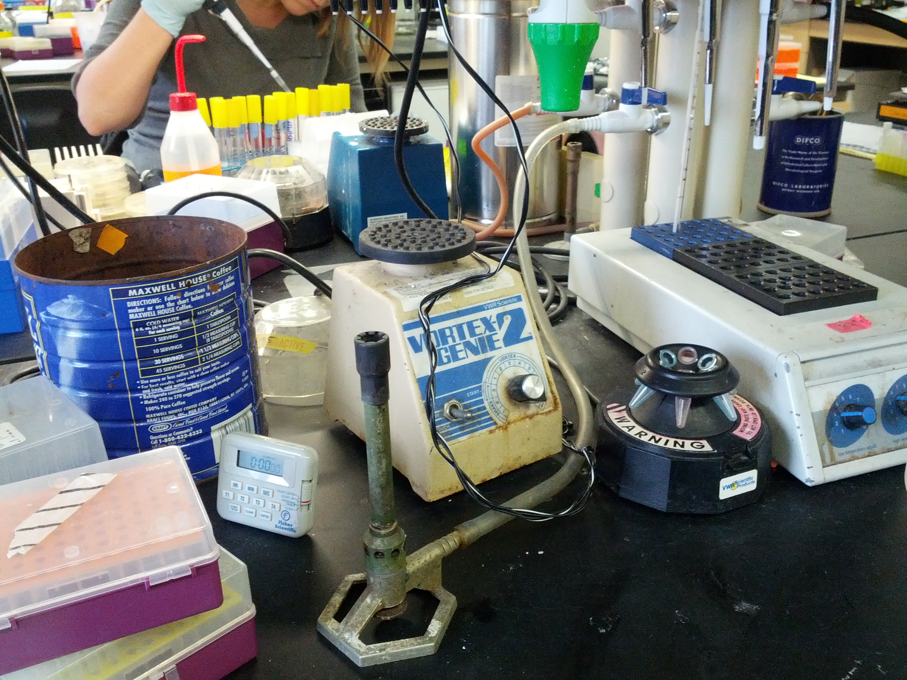

-
Literature Review
Because astronauts’ and engineers’ time is scarce and they work in high-stakes environments, they must execute procedures efficiently and minimize errors. A procedure execution system that provides concrete guidance, facilitates tool finding, encourages task collaboration, and helps them plan for unexpected events will facilitate these goals. To understand how to design such a system, we performed a technology review and read academic literature on the following areas:
- instruction manuals
- spatial cognition
- location awareness
- human-machine collaboration
- attention and interruptibility
- contingency planning
Our research revealed insights about effective instruction manual creation, humans’ mental mapping of spaces, and strategies people use to locate objects. We also discovered the impact of interruption on task execution, optimal conditions for human-machine collaboration., and different types of contingency plans. This section summarizes our research.
-
Our research methods included contextual inquiries (primary) and interviews (secondary). Because we could not observe one of our target users groups, astronauts, in context, we conducted contextual inquiries in four analogous domains: science, test labs, machine shops, and the medical domain. This research method enabled us to understand many aspects of procedure execution, including set up/clean up processes, the tools and reference materials individuals use, tools and materials organization, verification techniques, documentation, and collaboration with coworkers, since we observed individuals in their natural work context. We also conducted interviews to gather additional insights, or when we could not observe individuals for various reasons, such as patient privacy concerns in the medical domain.After each observation, we interpreted our data by creating various models, when appropriate, in order to understand different aspects of procedure execution:
- Flow model: shows how information and artifacts flow between entities when they perform a task
- Sequence model: shows the steps individuals undergo to complete a task
- Physical model: shows the physical layout of an individual’s workspace
- Artifact model: shows the physical artifacts that individuals create in order to support their work
- Cultural model: shows the pressures, norms, and influences that are present in a work environment
Moreover, we created an affinity diagram from our observation and interview notes in order to identify themes in our dataset. Finally, we extracted insights by consolidating our models and identifying high-level themes. Altogether, we performed 22 (21?) contextual inquiries and 7 interviews, broken down as follows:
-
Medical
Science Laboratory
Test Laboratory

Machine Shop

-
{kind=link}
{kind=link}